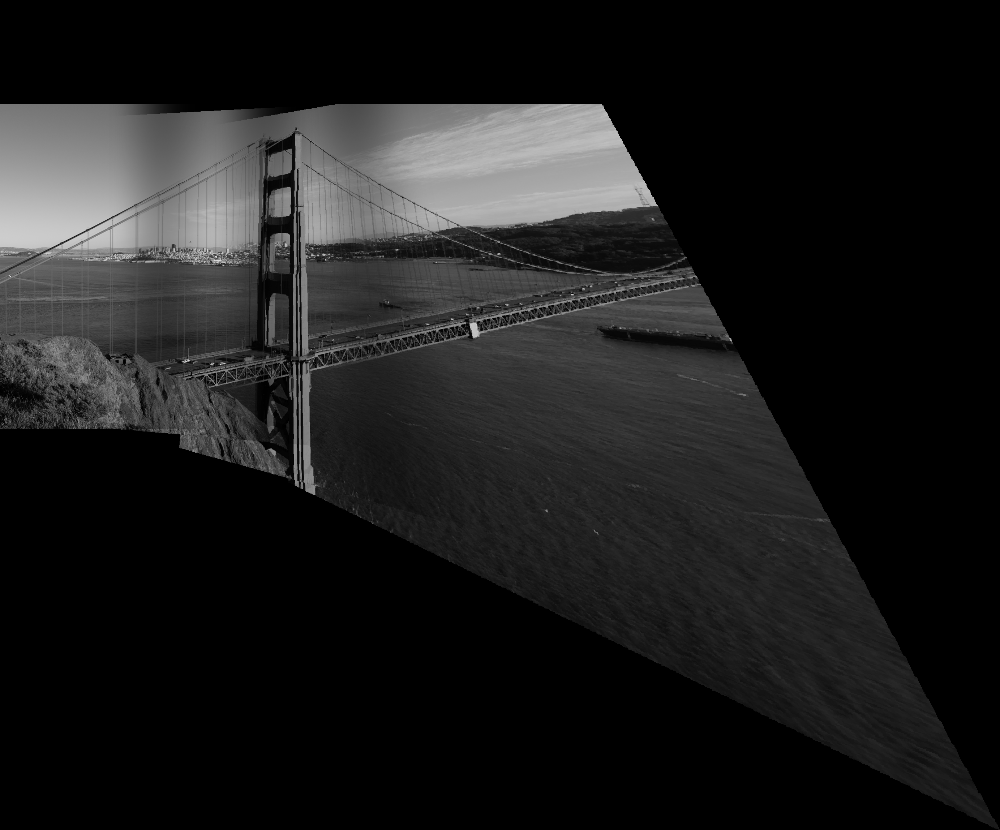

[Auto]Stitching Photo Mosaics
Table of Contents
1 Introduction
This project consists of transforming images so they can stitch together. I’ll describe how to distort a plane to match certain correspondences. I will also describe how to find the correspondences automatically and how this can make the results much better looking!
2 Image Warping and Mosaicing
This part of the project was definitely a rushed bit. It was due less than a week after it was released, so my results might not be the best.
2.1 Pictures
I took two pictures of the view outside my balcony in Porto Alegre, Brazil. I couldn’t do anything other than that due to the shelter in place demanded by the local government. My building’s facade is under repairs so it has a weird cloth around it that happens to be in my pictures. The photos I took are the following:
Other than that, because the results with the image above weren’t the best, I also applied the algorithm to some images of the Adobe panoramic images database.


2.2 Recover Homographies
To recover the homographies, I had to do the following math reasonings:
We have that the equation given in lecture can be transformed in 2 equations
These equations can be turned into a linear system that can be used for given N points. We also know that i = 1.
To express this constraint, we can simply add the last coefficient value to the results.
To solve this in python, we can call numpy.lstsq, which approximates the overdetermined system using the least square method.
2.3 Warp the Images
After discovering the homographies, we need to apply the transformation matrix \(H\) to all the pixels. In my method, I got a coordinate matrix from skimage.draw.polygon that refers to a rectangle and multiplied it by the inverse of \(H\) in order to inverse warp the transformation. Once having the new points, I divide them by their remaining \(w\) and colored the new “Canvas”.
2.4 Image Rectification
Once we warped the image, we would have a rectified picture. For the final blend, I used this geometry:
Now, applying the transformation to the image on the right, we get the following result:
Another example was to rectify this Versailles Palace image to make it planar:
You can see that my algorithm crops the image when the intended position would be negative (disregarding the translation) and also can get some errors while calculating the image space. Even though in the end these errors are either not that problematic, it can cause some errors during execution.
2.5 Mosaic Blending
Having the warpped image, it’s time to blend them together! We do so by generating a canvas large enough to contain both images. Since both will be mapped in the same proposed space (pixels of correspondence in the same place), the blending ends up being more of an alpha calibration blending. To do the calibration, I used a cosine function powered to a given exponent. I also decided to start blending after we had reached the middle of the image, which I realize that wouldn’t work if we had more than 50% of overlapping. Also, I only set my program to blend in the left to right direction. The alpha blending equation results are the following given an exponent:
These were the results:
exponent \(\frac{1}{4}\) on the left and \(\frac{1}{2}\) on the right.
exponent \(1\).
exponent \(2\) on the left and \(4\) on the right.
Given these results, I decided that the exponent of \(2\) gave me the best result because it blended well without losing too much of the first image.
We can see, however, that the results for my balcony images weren’t great. Given the image distortion created by me cellphone, the image seems much more angled than it should. Here are the results with the pictures from the Adobe datsaset, which have been taken without as much distortion:
I think this one looks great even with a little bit of error around the “Pão de Açúcar”. I set the points to be around the last building from left to right and a line around the top of the “Pão de Açúcar”. I picked 6 points.
This one turned out much better than I expected. The angle difference is subtle but once in panoramic view, we can definitely see it. I used 6 points, drew 2 triangles around the front bush and the rocks on the back.
This picture is my best result. I chose the points to be around the pillar and on the light posts. I picked 6 points.
2.6 What I learned
Well, I definitely learned how to solve some tricky linear systems with python. Overall, I think that I mostly got the idea behind homographies, which wasn’t very clear for me in lecture. I also learned, with the help of Shivam, that pictures taken with cellphones can get unwanted distortions for a panoramic mosaic.
3 Auto-Stitching
In this section, I’ll explain how I implemented the Auto-stitching method for some given images. I’ll use more than 2 images for mosaicing as well.
3.1 Adaptive Non-Maximal Suppression
This part of the algorithm is designed to remove bad edges found by the harris algorithm. We were given the algorithm done and were able to use the edge discard parameter to disregard some found edges. I used 150 as this parameter for both the Rio de Janeiro images as for the Shanghai images while used 100 for the Goldengate images considering that it showed it needed more precise edges and I was probably removing the best ones without knowing (my program was crashing or giving out unthinkable results).
To implement this part, I looked at every point returned by the harris function and checked out the best points for a radius neighborhood. At every iteration, increased the radius by 5 and checked whether I had the goal number of best edges. I aimed for 300 final edges in all images. This idea doesn’t scale really well for big images. Thus, when we start stitching the images together and getting bigger and bigger images, it becomes really slow, reaching 2min of computation for 15000 harris corners.
3.2 Feature Description Extraction
Once we have the corners, we need to check whether they have any correspondences in the other image. To do that, we need a descriptor for every corner good enough to describe the pixels around the corner to match its correspondence, but also compact enough so this doesn’t take a year to compute (300 features compared with 300 features makes 300 * 300 comparisons in my case… not really worth it). So I create a 40x40 bounding box around the corner, I blur it with a gaussian kernel in order to get a 8x8 descriptor. E. g.
3.3 Feature Matching
Now that we have the descriptor, we need to match the features to the other image’s. The threshold proposed by Brown’s paper can be used to filter out bad feature matches. First, we compute the Sum of Squared Differences from all features to all the other image’s features (300 x 300). If the best match for a given feature has the calculated SSD to be less than 20% of the second best match’s SSD, we accept that match to be a unique edge correspondence and add them to the new edge correspondence set. We’ll see that we are able to filter out around 280 out of those 300 features.
3.4 RANSAC - Computing the Homographies
We now have a map of correspondences and need to compute the morph. We can run RANSAC. This algorithm will consist of sampling 4 matches, computing the homography and checking how many of the matches in the full set are within a given error from the aimed point. I set the threshold to be 4 in a pixel space for a calculated euclidean squared distance from \(p\) to \(p'\). We add every transformed match that fits the error into a set. We maximisze the size of this set. Once we have the largest set, we have the optimal matches. We recalculate the homography with the least squares method. We have the transformation. We apply it and blend it.
3.5 Stitching a Panorama
My first idea was to compute the rightmost stitch, the leftmost, then the rightmost again and so on until I found the middle. That didn’t turn out really well because I would have to redo all my rectification algorithm. So I kept stitching new images to the left!
The manual image stitching results are the following for the following landscapes: Rio de Janeiro (4 images), Shanghai (4 images) and the Golden Gate (4 images). I manually inputted 6 correspondence points in all the images.

You can see that it doesn’t look really good. I even had to redo this a thousand times just so it looked aligned. There are a lot of problems by stitching more than 2 images together.
The automatic image stitching results are the following for the following landscapes: Rio de Janeiro (5 images), Shanghai (4 images) and the Golden Gate (4 images).
It’s clear that these results are much better. Not only they must have considered more than 6 points, but they were definitely more precise! There are no abrupt distortions or any big issue with these results! The Shanghai result has a problem with the boat that probably was in movement during the picture, but this only helps proving that the results are so well calculated that it probably only removes the boat edges on the RANSAC algorithm!
4 What I learned and What I wished I had done
This was the project I had the most fun doing. I feel like the results turned out super nice but still with room for improvement. Understanding how we can assign new perspectives with a few parameters for a given image is something I didn’t really think about until this project, which makes some technologies such as AR more understandable.
I really wish I had more time to do the Bells & Whistles. I wanted to improve my blending, which looks good but it’s still noticeable. I wanted to do Laplacian Stacking or calculate the overlapping areas to apply my Cosine blending (I think this would look surprisingly good). I also wanted to understand the orientation feature and apply them to the descriptor as well as make some video stitching.
All of this that has been going on with the Pandemic really threw me out of my game and I almost didn’t have time to do this. I’ll definitely try finishing this with Bells & Whistles over summer break.